🌱
2020 · Lucknow & Remote
First steps in the field
Grassroots marketing intern at Swapna Foundation, then youth outreach with Leadershala — my first taste of community work, while completing my B.Com (2021).
नमस्ते, मैं हूँ
Rural Development Professional — weaving livelihoods, craft and community across village India.
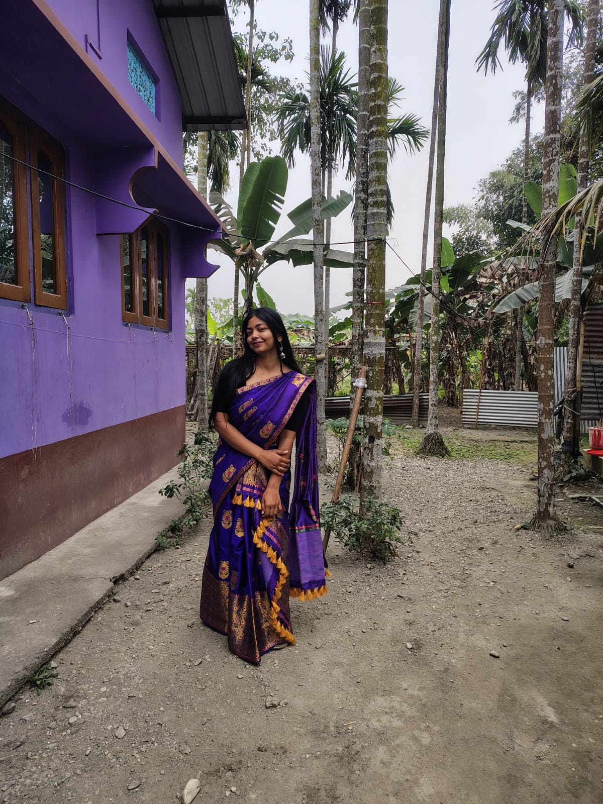
मेरे बारे में
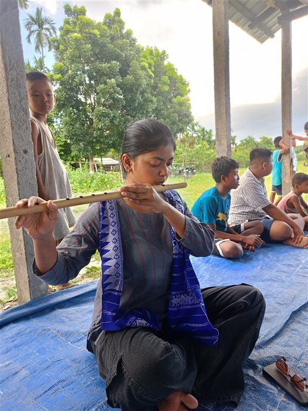
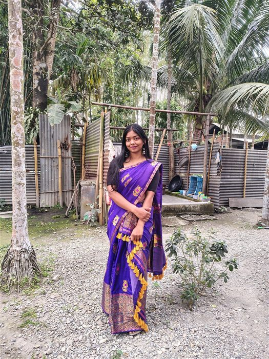
I grew up in Deoria, Uttar Pradesh, studied commerce in Lucknow, and left the corporate desk to sit on village floors — where I found I do my best work.
As an SBI Youth for India Fellow, I spent 13 months in Bodoland, Assam with the women of Khetha Khuri, helping revive the endangered Kheta embroidery craft and turn it into Dhuniya Crafts — a brand whose little cloth elephants now travel out of Manas National Park with tourists from around the world.
Today, as a Subject Matter Specialist with SUVIDHA NGO under HDFC Parivartan's HRDP 2.0, I work across 15 villages of Madhya Pradesh — strengthening handloom centres where 40 women weave Maheshwari sarees, supporting sewing centres, and monitoring vermi-compost units for organic farming.
"Development isn't something you deliver to a village. It's something you weave with it — thread by thread."
मेरा सफ़र
Tap a milestone to read the full story.
2020 · Lucknow & Remote
Grassroots marketing intern at Swapna Foundation, then youth outreach with Leadershala — my first taste of community work, while completing my B.Com (2021).
May – Oct 2023 · Gurgaon
Resolved 50–70 financial disputes weekly at 98% SLA compliance and helped cut case resolution time by 15%. Corporate discipline I still use in field program management.
Oct 2023 – Jun 2024 · Delhi
Volunteered on literacy and menstrual-health programs reaching 200+ beneficiaries — the push that turned social work from a side interest into the main road.
Aug 2024 – Sep 2025 · Bodoland, Assam
Thirteen months embedded with the Khetha Khuri tribal women near Manas National Park, reviving the endangered Kheta embroidery craft and building an enterprise from a baseline survey up:
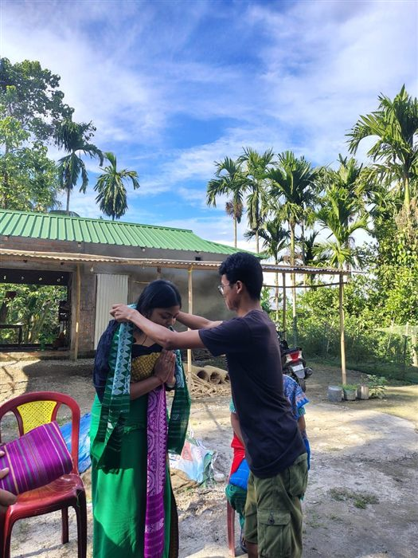
Dec 2025 – Present · Madhya Pradesh
Under HDFC Parivartan's HRDP 2.0 Holistic Rural Development Program, driving enterprise and livelihoods across 15 villages:
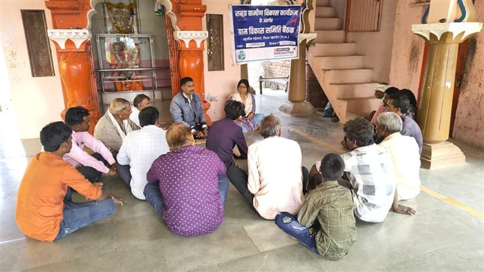
ज़मीनी असर
धुनिया क्राफ्ट्स
In the villages fringing Manas National Park, elephants are neighbours — sometimes troublesome ones. The women of Khetha Khuri turned that uneasy relationship into art: hand-stitched elephants, keychains and embroidered garments.
I helped shape this work into Dhuniya Crafts — brand identity, pricing, financial literacy sessions, quality systems and market linkages — so that every stitched trunk and tail sends income back to the artisan who made it.
Artisan earnings grew from ₹180 to ≈₹2,500 in four months of my tenure.
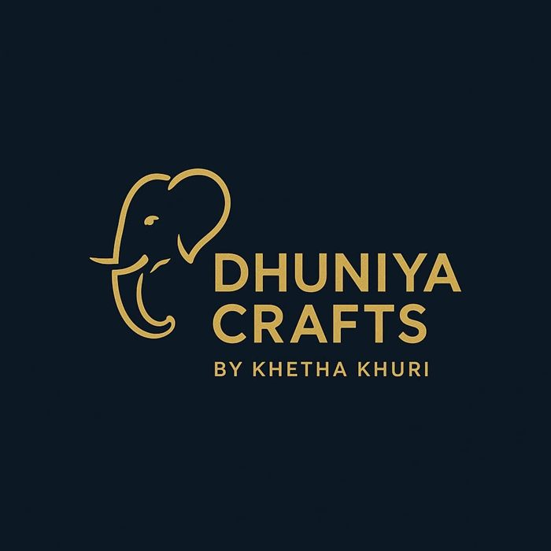
▶ हाथों का हुनर — the hands at work, on loop
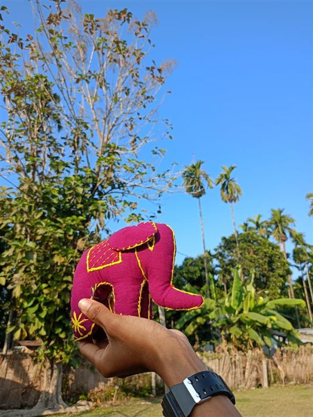
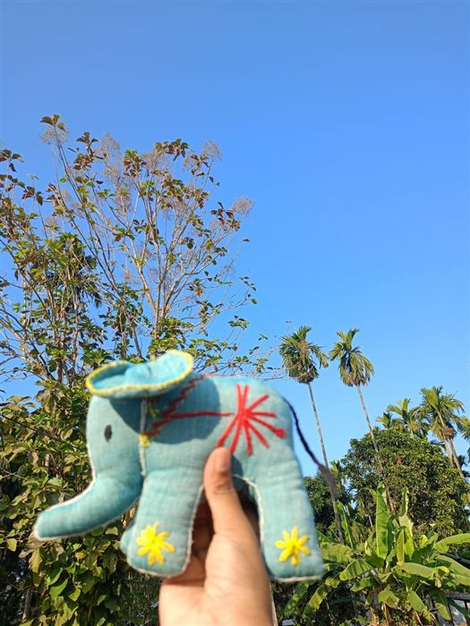
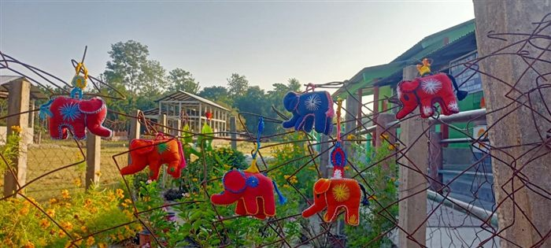
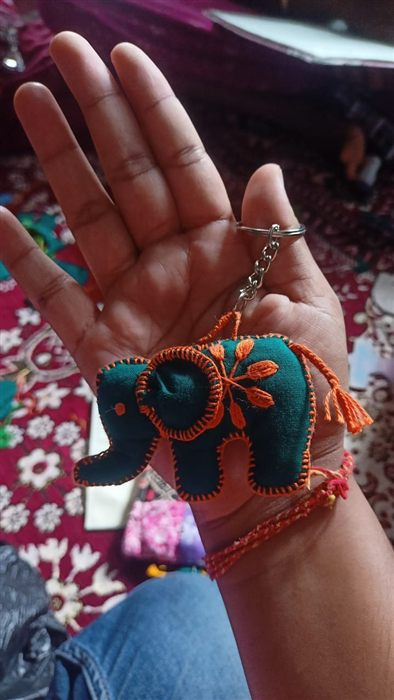
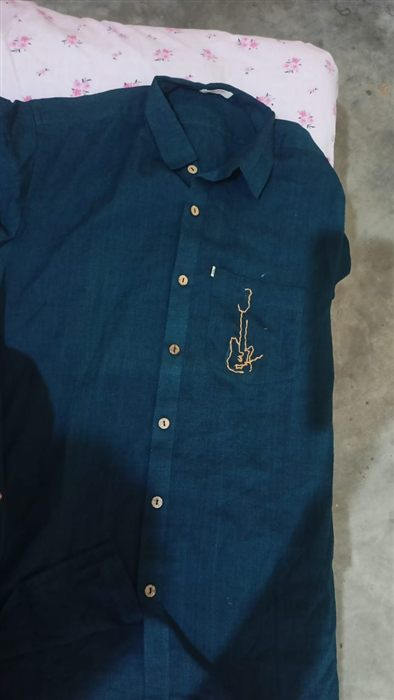
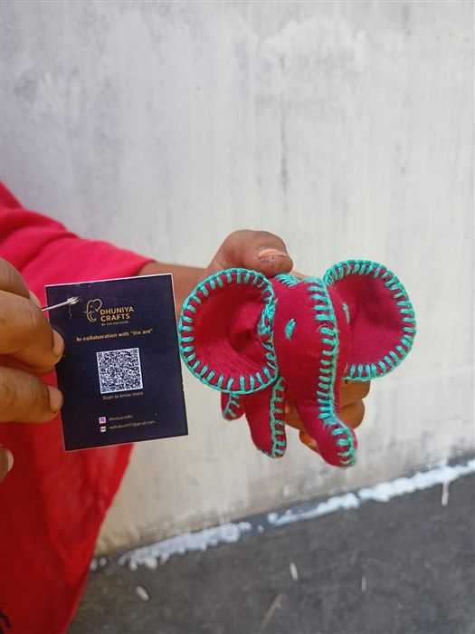
डायरी के पन्ने
Lines I wrote along the way — from thirteen months in Assam to the villages of Maheshwar.
झलकियाँ
Watch the highlights reel — or open a category to browse every photo.
Auto-playing reel · click the frame to view full-size
संपर्क करें
Open to roles and collaborations in rural livelihoods, social enterprise, CSR programs and craft-based development.
Download my CV